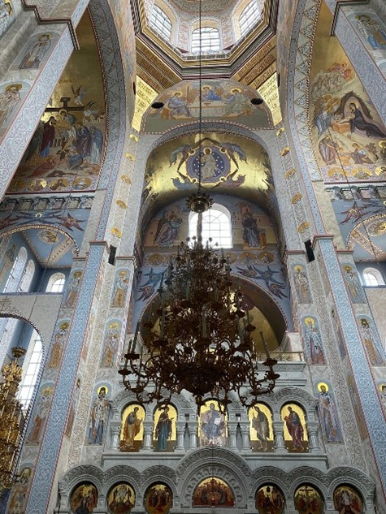
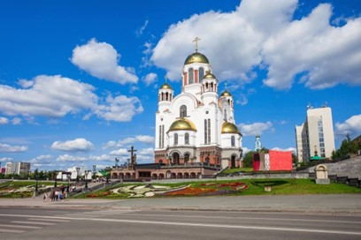
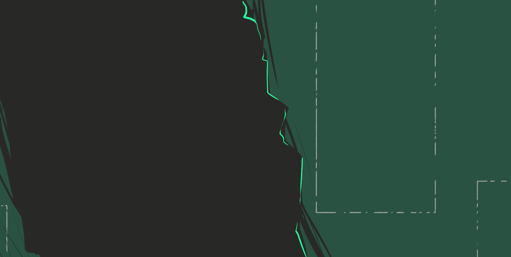

Храм на Крови
Храм на Крови (полное название: Храм-памятник на Крови во имя Всех Святых, в земле Российской просиявших) — православный храм в Екатеринбурге, построенный на месте дома Ипатьева, в котором содержались под арестом и были расстреляны в ночь на 17 июля 1918 года последний российский император Николай II, его семья и четверо слуг Построенный в 2000—2003 годах, он стал главной туристической достопримечательностью Екатеринбурга, а также главным центром памяти святого Николая II и его семьи, привлекающим православных паломников не только из России, но и со всего мира.
Пятикупольный храм, выполненный в русско-византийском стиле, является двухуровневым. Верхний храм во имя Всех святых, в земле Российской просиявших, — высокий и со множеством окон, с уникальным беломраморным иконостасом. Нижний храм в честь новомучеников и исповедников Церкви Русской по контрасту спланирован полумрачным и с низкими сводами, но именно здесь находится крипта, символически воссоздающая расстрельную комнату, в которой погиб бывший царь с супругой, пятью детьми и четырьмя приближёнными
При храме действует приход, окормляемый шестью священниками. В приходе работают воскресная школа, художественная школа, детский хор, а также катехизаторские курсы, казачий штаб, служба милосердия и другие приходские структуры.
В 2003 году храм был принят в государственную собственность Свердловской области. В 2013 году депутаты Законодательного собрания Свердловской области приняли решение о передаче Храма на Крови в собственность Екатеринбургской епархии.


